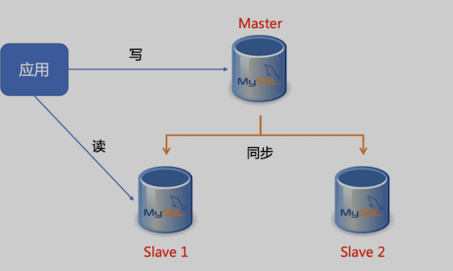

第一节 Kubernetes 部署 MySQL 主从服务
一般情况下 Kubernetes 可以通过 ReplicaSet 以一个 Pod 模板创建多个 pod 副本，但是它们都是无状态的，任何时候它们都可以被一个全新的 pod 替换。然而有状态的 pod 需要另外的方案确保当一个有状态的 pod 挂掉后，这个 pod 实例需要在别的节点上重建，但是新的实例必须与被替换的实例拥有相同的名称、网络标识和状态。这就是 Statefulset 管理 pod 的手段。
对于容器集群，有状态服务的挑战在于，通常集群中的任何节点都并非100%可靠的，服务所需的资源也会动态地更新改变。
当节点由于故障或服务由于需要更多的资源而无法继续运行在原有节点上时，集群管理系统会为该服务重新分配一个新的运行位置，从而确保从整体上看，集群对外的服务不会中断。若采用本地存储，当服务漂移后数据并不会随着服务转移到新的节点，重启服务就会出现数据丢失的困境。
本文目的是通过一个 mysql 的主从集群搭建，深入了解 kubernetes 的 statfulset 管理。
为了降低实验的外部依赖，存储层面上，我采用的是本地存储，当然生产上不建议这样做，生产环境的存储推荐官方介绍到的的 gce、nfs、ceph等存储方案，因为这些方案支持动态供给的特性，允许开发人员通过 pvc 的定义，快速实现数据有效存储，所以你绝不应该把一个宿主机上的目录当作 PV 使用， 只是本文用于实验需要，采用 Local Persistent Volume 的手段，目的只是为了验证 Statefulset 的状态管理功能。
实验环境
- kubernetes Master
- kubernetes Node（测试演示，所有的副本都会在其上运行）
- kubernetes DNS 服务已开启
实验目的
- 搭建一个主从复制（Master-Slave）的 MySQL 集群
- 从节点可以水平扩展
- 所有的写操作只能在主节点上执行
- 读操作可以在主从节点上执行
- 从节点能同步主节点的数据

一、本地存储原理
为了快速搭建测试环境，我们这里使用了本地存储，也就是说，用户希望 Kubernetes 能够直接使用宿主机上的本地磁盘目录，而不依赖于远程存储服务，来提供持久化的容器 Volume。不过这里有个难点：
我们把存储固定在一个节点上，但是pod在调度的时候，是飘来飘去的，怎么能让pod通过pvc也能固定在pv上？
给这个 Pod 加上一个 nodeAffinity 行不行？
当然行，但是这变相破坏了开发人员对资源对象的定义规范了，开发人员应该不需要时刻考虑调度的细节。调度的改动应该交给运维就行。所以我们为了实现本地存储，我们采用了 延迟绑定 的方法。
方法很简单，我们都知道 storageclass 一般由运维人员设计，我们只需要在storageclass指定 no-provisioner。
这是因为 Local Persistent Volume 目前尚不支持 Dynamic Provisioning，所以它没办法在用户创建 PVC 的时候，就自动创建出对应的 PV。
与此同时，这个 StorageClass 还定义了一个 volumeBindingMode=WaitForFirstConsumer的属性。它是Local Persistent Volume 里一个非常重要的特性，即：延迟绑定
kind: StorageClass
apiVersion: storage.k8s.io/v1
metadata:
name: local-storage
provisioner: kubernetes.io/no-provisioner
volumeBindingMode: WaitForFirstConsumer
实验步骤
先在node （实验用的node节点IP是172.31.170.51 ）节点上，预先分配几个pv (不建议在生产上这样操作)
01-persistentVolume-1.yaml
apiVersion: v1
kind: PersistentVolume
metadata:
name: example-mysql-pv
spec:
capacity:
storage: 15Gi
volumeMode: Filesystem
accessModes:
- ReadWriteOnce
persistentVolumeReclaimPolicy: Delete
storageClassName: local-storage
local:
path: /data/svr/projects/mysql
nodeAffinity:
required:
nodeSelectorTerms:
- matchExpressions:
- key: kubernetes.io/hostname
operator: In
values:
- 172.31.170.51
01-persistentVolume-2.yaml
apiVersion: v1
kind: PersistentVolume
metadata:
name: example-mysql-pv-2
spec:
capacity:
storage: 15Gi
volumeMode: Filesystem
accessModes:
- ReadWriteOnce
persistentVolumeReclaimPolicy: Delete
storageClassName: local-storage
local:
path: /data/svr/projects/mysql2
nodeAffinity:
required:
nodeSelectorTerms:
- matchExpressions:
- key: kubernetes.io/hostname
operator: In
values:
- 172.31.170.51
01-persistentVolume-3.yaml
apiVersion: v1
kind: PersistentVolume
metadata:
name: example-mysql-pv-3
spec:
capacity:
storage: 15Gi
volumeMode: Filesystem
accessModes:
- ReadWriteOnce
persistentVolumeReclaimPolicy: Delete
storageClassName: local-storage
local:
path: /data/svr/projects/mysql3
nodeAffinity:
required:
nodeSelectorTerms:
- matchExpressions:
- key: kubernetes.io/hostname
operator: In
values:
- 172.31.170.51
记住，这是在生产上不推荐的做法，我只是实验用途才这样手动预先创建，正规的做法应该通过storageclass采用 Dynamic Provisioning， 而不是 Static Provisioning 机制生产PV。
kubectl apply -f 01-persistentVolume-{1..3}.yaml
persistentvolume/example-mysql-pv1 created
persistentvolume/example-mysql-pv2 created
persistentvolume/example-mysql-pv3 created
二、创建 StorageClass
02-storageclass.yaml
kind: StorageClass
apiVersion: storage.k8s.io/v1
metadata:
name: local-storage
provisioner: kubernetes.io/no-provisioner
volumeBindingMode: WaitForFirstConsumer
执行创建
kubectl apply -f 02-storageclass.yaml
storageclass.storage.k8s.io/local-storage created
三、创建Namespace
apiVersion: v1
kind: Namespace
metadata:
name: mysql
labels:
app: mysql
执行创建
kubectl apply -f 03-mysql-namespace.yaml
namespace/mysql created
四、使用 ConfigMap 为 Master/Slave 节点分配不同的配置文件
04-mysql-configmap.yaml
apiVersion: v1
kind: ConfigMap
metadata:
name: mysql
namespace: mysql
labels:
app: mysql
data:
master.cnf: |
# Master配置
[mysqld]
log-bin=mysqllog
skip-name-resolve
slave.cnf: |
# Slave配置
[mysqld]
super-read-only
skip-name-resolve
log-bin=mysql-bin
replicate-ignore-db=mysql
创建执行
kubectl apply -f 04-mysql-configmap.yaml
configmap/mysql created
五、创建mysql密码Secret
05-mysql-secret.yaml
apiVersion: v1
kind: Secret
metadata:
name: mysql-secret
namespace: mysql
labels:
app: mysql
type: Opaque
data:
password: MTIzNDU2 # echo -n "123456" | base64
kubectl apply -f 05-mysql-secret.yaml
secret/mysql-secret created
六、使用 Service 为 MySQL 提供读写分离
06-mysql-services.yaml
apiVersion: v1
kind: Service
metadata:
name: mysql
namespace: mysql
labels:
app: mysql
spec:
ports:
- name: mysql
port: 3306
clusterIP: None
selector:
app: mysql
---
apiVersion: v1
kind: Service
metadata:
name: mysql-read
namespace: mysql
labels:
app: mysql
spec:
ports:
- name: mysql
port: 3306
selector:
app: mysql
用户所有写请求，必须以 DNS 记录的方式直接访问到 Master 节点，也就是 mysql-0.mysql这条 DNS 记录。
用户所有读请求，必须访问自动分配的 DNS 记录可以被转发到任意一个 Master 或 Slave 节点上，也就是 mysql-read这条 DNS 记录
kubectl apply -f 06-mysql-services.yaml
$ kubectl get svc -n mysql
NAME TYPE CLUSTER-IP EXTERNAL-IP PORT(S) AGE
mysql ClusterIP None <none> 3306/TCP 20s
mysql-read ClusterIP 10.0.0.63 <none> 3306/TCP 20s
七、使用 StatefulSet 搭建 MySQL 主从集群
07-mysql-statefulset.yaml
apiVersion: apps/v1
kind: StatefulSet
metadata:
name: mysql
namespace: mysql
labels:
app: mysql
spec:
selector:
matchLabels:
app: mysql
serviceName: mysql
replicas: 2
template:
metadata:
labels:
app: mysql
spec:
initContainers:
- name: init-mysql
image: mysql:5.7
env:
- name: MYSQL_ROOT_PASSWORD
valueFrom:
secretKeyRef:
name: mysql-secret
key: password
command:
- bash
- "-c"
- |
set -ex
# 从 Pod 的序号，生成 server-id
[[ $(hostname) =~ -([0-9]+)$ ]] || exit 1
ordinal=${BASH_REMATCH[1]}
echo [mysqld] > /mnt/conf.d/server-id.cnf
# 由于 server-id 不能为 0，因此给 ID 加 100 来避开它
echo server-id=$((100 + $ordinal)) >> /mnt/conf.d/server-id.cnf
# 如果 Pod 的序号为 0，说明它是 Master 节点，从 ConfigMap 里把 Master 的配置文件拷贝到 /mnt/conf.d 目录下
# 否则，拷贝 ConfigMap 里的 Slave 的配置文件
if [[ ${ordinal} -eq 0 ]]; then
cp /mnt/config-map/master.cnf /mnt/conf.d
else
cp /mnt/config-map/slave.cnf /mnt/conf.d
fi
volumeMounts:
- name: conf
mountPath: /mnt/conf.d
- name: config-map
mountPath: /mnt/config-map
- name: clone-mysql
image: gcr.io/google-samples/xtrabackup:1.0
env:
- name: MYSQL_ROOT_PASSWORD
valueFrom:
secretKeyRef:
name: mysql-secret
key: password
command:
- bash
- "-c"
- |
set -ex
# 拷贝操作只需要在第一次启动时进行，所以数据已经存在则跳过
[[ -d /var/lib/mysql/mysql ]] && exit 0
# Master 节点（序号为 0）不需要这个操作
[[ $(hostname) =~ -([0-9]+)$ ]] || exit 1
ordinal=${BASH_REMATCH[1]}
[[ $ordinal == 0 ]] && exit 0
# 使用 ncat 指令，远程地从前一个节点拷贝数据到本地
ncat --recv-only mysql-$(($ordinal-1)).mysql 3307 | xbstream -x -C /var/lib/mysql
# 执行 --prepare，这样拷贝来的数据就可以用作恢复了
xtrabackup --prepare --target-dir=/var/lib/mysql
volumeMounts:
- name: data
mountPath: /var/lib/mysql
subPath: mysql
- name: conf
mountPath: /etc/mysql/conf.d
containers:
- name: mysql
image: mysql:5.7
env:
# - name: MYSQL_ALLOW_EMPTY_PASSWORD
# value: "1"
- name: MYSQL_ROOT_PASSWORD
valueFrom:
secretKeyRef:
name: mysql-secret
key: password
ports:
- name: mysql
containerPort: 3306
volumeMounts:
- name: data
mountPath: /var/lib/mysql
subPath: mysql
- name: conf
mountPath: /etc/mysql/conf.d
resources:
requests:
cpu: 500m
memory: 1Gi
livenessProbe:
exec:
command: ["mysqladmin", "ping", "-uroot", "-p${MYSQL_ROOT_PASSWORD}"]
initialDelaySeconds: 30
periodSeconds: 10
timeoutSeconds: 5
readinessProbe:
exec:
command: ["mysqladmin", "ping", "-uroot", "-p${MYSQL_ROOT_PASSWORD}"]
initialDelaySeconds: 5
periodSeconds: 2
timeoutSeconds: 1
- name: xtrabackup
image: gcr.io/google-samples/xtrabackup:1.0
ports:
- name: xtrabackup
containerPort: 3307
env:
- name: MYSQL_ROOT_PASSWORD
valueFrom:
secretKeyRef:
name: mysql-secret
key: password
command:
- bash
- "-c"
- |
set -ex
cd /var/lib/mysql
# 从备份信息文件里读取 MASTER_LOG_FILE 和 MASTER_LOG_POS 这 2 个字段的值，用来拼装集群初始化 SQL
if [[ -f xtrabackup_slave_info ]]; then
# 如果 xtrabackup_slave_info 文件存在，说明这个备份数据来自于另一个 Slave 节点
# 这种情况下，XtraBackup 工具在备份的时候，就已经在这个文件里自动生成了 "CHANGE MASTER TO" SQL 语句
# 所以，只需要把这个文件重命名为 change_master_to.sql.in，后面直接使用即可
mv xtrabackup_slave_info change_master_to.sql.in
# 所以，也就用不着 xtrabackup_binlog_info 了
rm -f xtrabackup_binlog_info
elif [[ -f xtrabackup_binlog_info ]]; then
# 如果只是存在 xtrabackup_binlog_info 文件，说明备份来自于 Master 节点，就需要解析这个备份信息文件，读取所需的两个字段的值
[[ $(cat xtrabackup_binlog_info) =~ ^(.*?)[[:space:]]+(.*?)$ ]] || exit 1
rm xtrabackup_binlog_info
# 把两个字段的值拼装成 SQL，写入 change_master_to.sql.in 文件
echo "CHANGE MASTER TO MASTER_LOG_FILE='${BASH_REMATCH[1]}',\
MASTER_LOG_POS=${BASH_REMATCH[2]}" > change_master_to.sql.in
fi
# 如果存在 change_master_to.sql.in，就意味着需要做集群初始化工作
if [[ -f change_master_to.sql.in ]]; then
# 但一定要先等 MySQL 容器启动之后才能进行下一步连接 MySQL 的操作
echo "Waiting for mysqld to be ready（accepting connections）"
until mysql -h 127.0.0.1 -uroot -p${MYSQL_ROOT_PASSWORD} -e "SELECT 1"; do sleep 1; done
echo "Initializing replication from clone position"
# 将文件 change_master_to.sql.in 改个名字
# 防止这个 Container 重启的时候，因为又找到了 change_master_to.sql.in，从而重复执行一遍初始化流程
mv change_master_to.sql.in change_master_to.sql.orig
# 使用 change_master_to.sql.orig 的内容，也就是前面拼装的 SQL，组成一个完整的初始化和启动 Slave 的 SQL 语句
mysql -h 127.0.0.1 -uroot -p${MYSQL_ROOT_PASSWORD} << EOF
$(< change_master_to.sql.orig),
MASTER_HOST='mysql-0.mysql.mysql',
MASTER_USER='root',
MASTER_PASSWORD='${MYSQL_ROOT_PASSWORD}',
MASTER_CONNECT_RETRY=10;
START SLAVE;
EOF
fi
# 使用 ncat 监听 3307 端口。
# 它的作用是，在收到传输请求的时候，直接执行 xtrabackup --backup 命令，备份 MySQL 的数据并发送给请求者
exec ncat --listen --keep-open --send-only --max-conns=1 3307 -c \
"xtrabackup --backup --slave-info --stream=xbstream --host=127.0.0.1 --user=root --password=${MYSQL_ROOT_PASSWORD}"
volumeMounts:
- name: data
mountPath: /var/lib/mysql
subPath: mysql
- name: conf
mountPath: /etc/mysql/conf.d
volumes:
- name: conf
emptyDir: {}
- name: config-map
configMap:
name: mysql
volumeClaimTemplates:
- metadata:
name: data
spec:
accessModes:
- "ReadWriteOnce"
storageClassName: local-storage
resources:
requests:
storage: 3Gi
整体的statefulset有两个replicas，一个Master, 一个Slave，然后使用init-mysql 这个 initContainers 进行配置文件的初始化。
接着使用 clone-mysql 这个 initContainers 进行数据的传输；同时使用 xtrabackup 这个 sidecar 容器进行SQL初始化和数据传输功能
创建 StatefulSet
kubectl apply -f 07-mysql-statefulset.yaml
$ kubectl get po -n mysql
NAME READY STATUS RESTARTS AGE
mysql-0 2/2 Running 0 70s
mysql-1 0/2 Pending 0 5s
可以看到，StatefulSet 启动成功后，会有两个Pod运行。
接下来，我们可以尝试向这个MySQL集群发起请求，执行一些SQL操作来验证它是否正常
服务验证
验证主从状态
kubectl -n mysql exec mysql-1 -c mysql -- bash -c "mysql -uroot -p123456 -e 'show slave status \G'"
mysql: [Warning] Using a password on the command line interface can be insecure.
*************************** 1. row ***************************
Slave_IO_State: Waiting for master to send event
Master_Host: mysql-0.mysql.mysql
Master_User: root
Master_Port: 3306
Connect_Retry: 10
Master_Log_File: mysqllog.000003
Read_Master_Log_Pos: 154
Relay_Log_File: mysql-1-relay-bin.000002
Relay_Log_Pos: 319
Relay_Master_Log_File: mysqllog.000003
Slave_IO_Running: Yes
Slave_SQL_Running: Yes
Replicate_Do_DB:
Replicate_Ignore_DB: mysql
Replicate_Do_Table:
Replicate_Ignore_Table:
Replicate_Wild_Do_Table:
Replicate_Wild_Ignore_Table:
Last_Errno: 0
Last_Error:
Skip_Counter: 0
Exec_Master_Log_Pos: 154
Relay_Log_Space: 528
Until_Condition: None
Until_Log_File:
Until_Log_Pos: 0
Master_SSL_Allowed: No
Master_SSL_CA_File:
Master_SSL_CA_Path:
Master_SSL_Cert:
Master_SSL_Cipher:
Master_SSL_Key:
Seconds_Behind_Master: 0
Master_SSL_Verify_Server_Cert: No
Last_IO_Errno: 0
Last_IO_Error:
Last_SQL_Errno: 0
Last_SQL_Error:
Replicate_Ignore_Server_Ids:
Master_Server_Id: 100
Master_UUID: 1bad4d64-6290-11ea-8376-0242ac113802
Master_Info_File: /var/lib/mysql/master.info
SQL_Delay: 0
SQL_Remaining_Delay: NULL
Slave_SQL_Running_State: Slave has read all relay log; waiting for more updates
Master_Retry_Count: 86400
Master_Bind:
Last_IO_Error_Timestamp:
Last_SQL_Error_Timestamp:
Master_SSL_Crl:
Master_SSL_Crlpath:
Retrieved_Gtid_Set:
Executed_Gtid_Set:
Auto_Position: 0
Replicate_Rewrite_DB:
Channel_Name:
Master_TLS_Version:
接下来，我们通过Master容器创建数据库和表、插入数据库
kubectl -n mysql exec mysql-0 -c mysql -- bash -c "mysql -uroot -p123456 -e 'create database test’"
kubectl -n mysql exec mysql-0 -c mysql -- bash -c "mysql -uroot -p123456 -e 'use test;create table counter(c int);’"
kubectl -n mysql exec mysql-0 -c mysql -- bash -c "mysql -uroot -p123456 -e 'use test;insert into counter values(123)’"
然后，我们观察Slave节点是否都同步到数据了
kubectl -n mysql exec mysql-1 -c mysql -- bash -c "mysql -uroot -p123456 -e 'use test;select * from counter’"
c
123
当看到输出结果，主从同步正常了
扩展从节点
在有了 StatefulSet 以后，你就可以像 Deployment 那样，非常方便地扩展这个 MySQL 集群，比如
kubectl -n mysql scale statefulset mysql -—replicas=3
$ kubectl get po -n mysql
NAME READY STATUS RESTARTS AGE
mysql-0 2/2 Running 0 22m
mysql-1 2/2 Running 0 22m
mysql-2 2/2 Running 0 20s
这时候，一个新的mysql-2就创建出来了，我们继续验证新扩容的节点是否都同步到主节点的数据
kubectl -n mysql exec mysql-2 -c mysql -- bash -c "mysql -uroot -p123456 -e 'use test;select * from counter’"
c
123
当看到输出结果，主从同步正常了。也就是说从 StatefulSet 为我们新创建的 mysql-2 上，同样可以读取到之前插入的记录。也就是说，我们的数据备份和恢复，都是有效的。